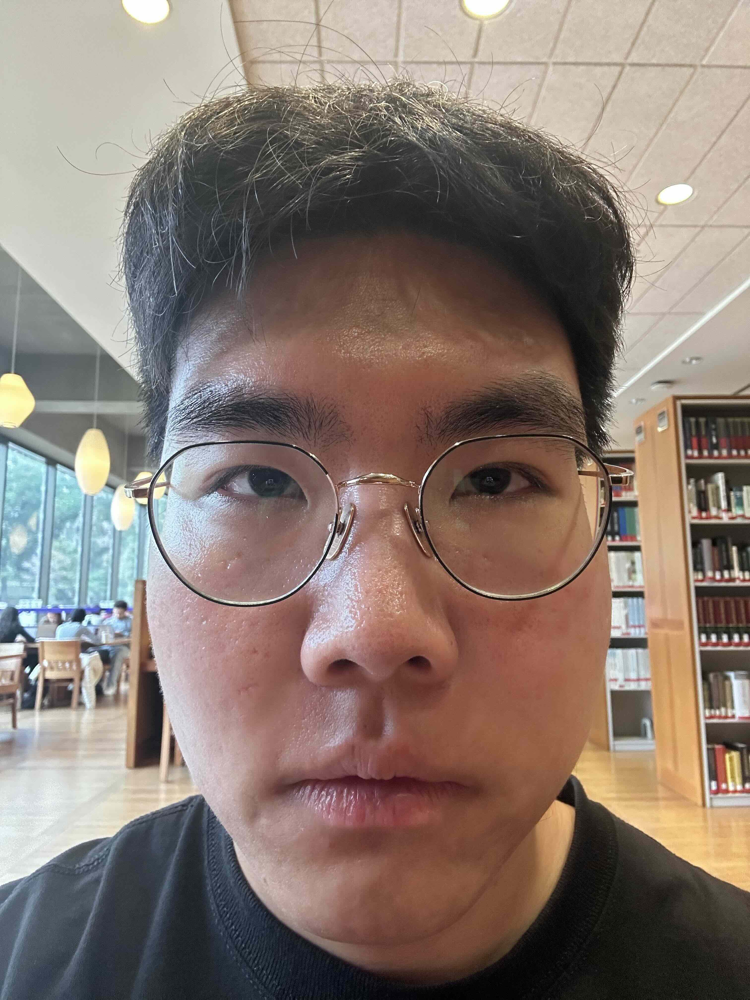
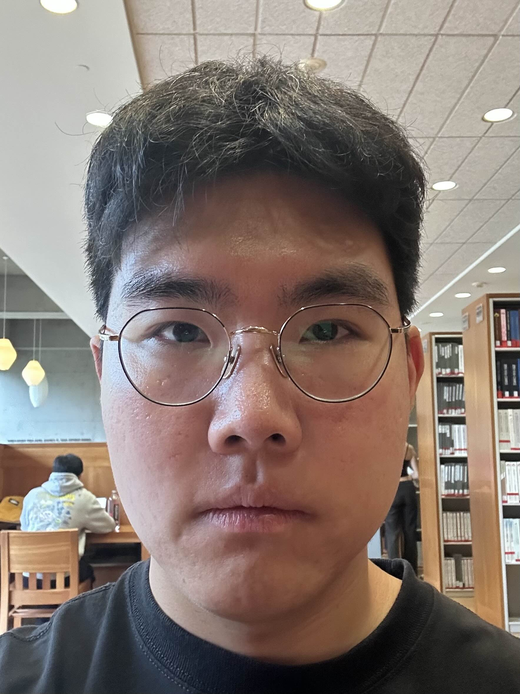
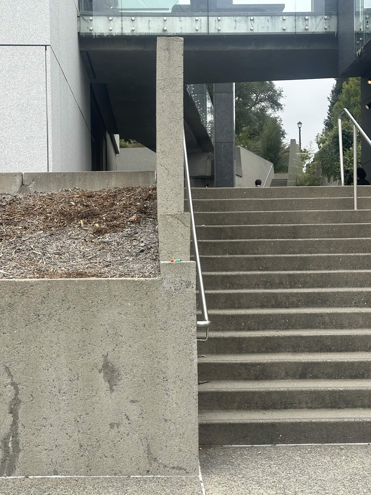
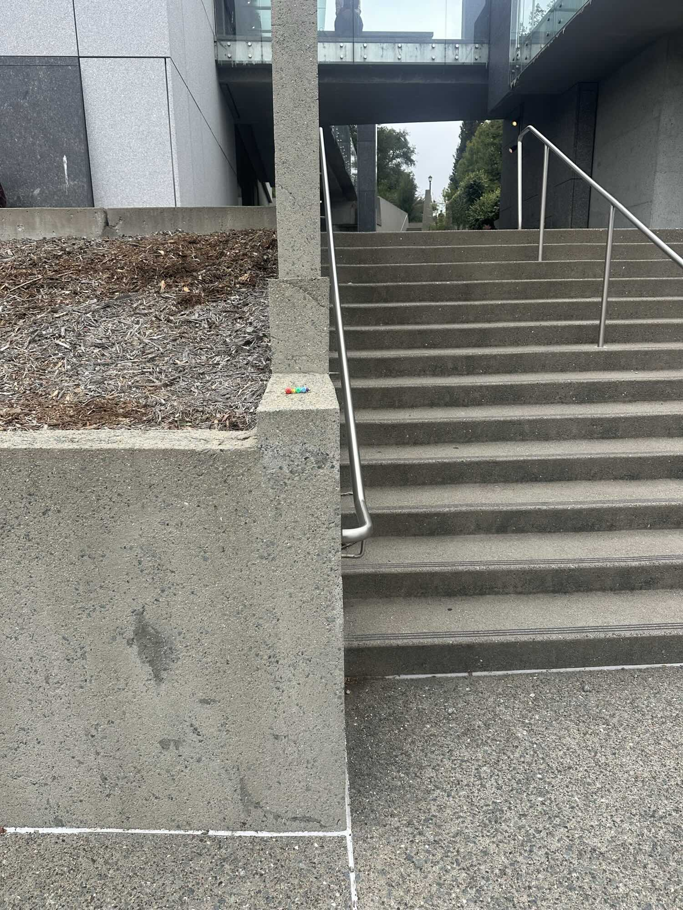
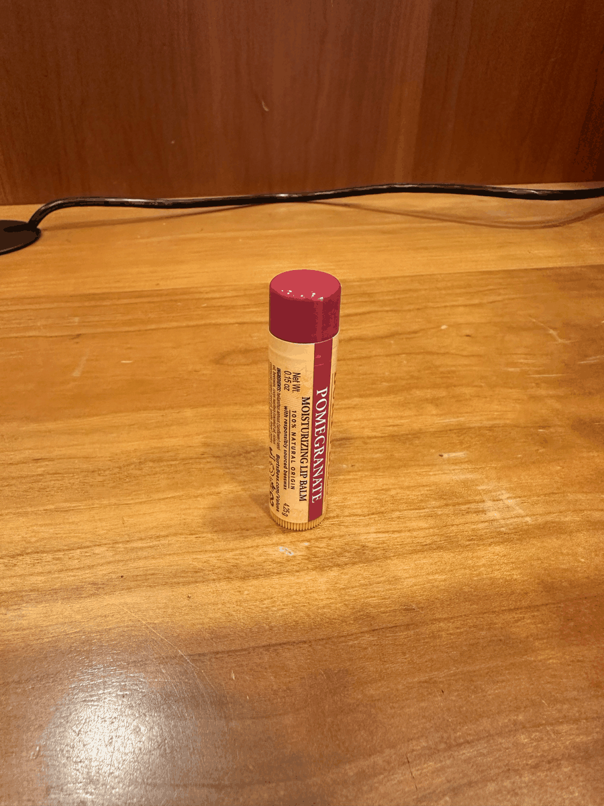

Why are the two photos so different? Ultimately, everything boils down to the ratio of how close the facial features are to the camera lens. When the camera is up close and personal, the nose is very close to the camera while the ears are relatively further away. Therefore, the camera displays closer facial features (e.g. nose) much bigger than further features (e.g. ears) which causes the distortion. When the camera is further away, the nose is still closer to the camera than the ears, but the ratio of the distances shrinks, causing less distortion. Zooming in just magnifies the photo uniformly, so it doesn’t matter.


Again, it is all about the relative distances from the camera. As the camera comes closer, the more distorted everything looks because every small difference in distance now suddenly matters. Very far away, however, it doesn’t matter because the couple tens of centimeters of difference hardly has any impact.
